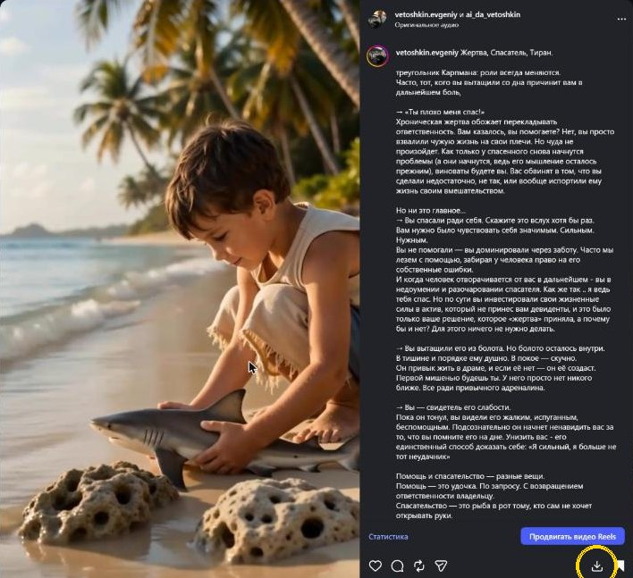
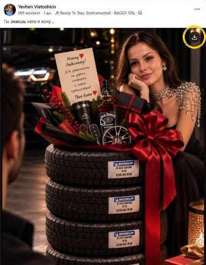
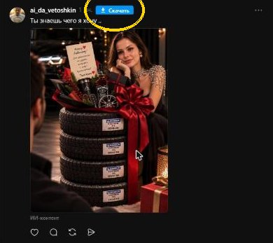
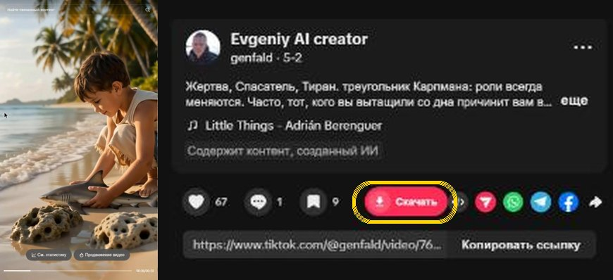
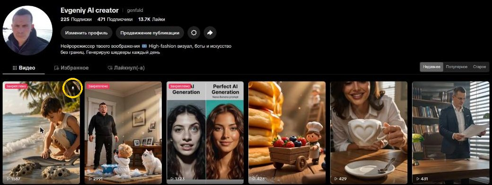

Vietro Downloader
Помощь и частые вопросы · Help & FAQ
Как пользоваться
Установка
- Установите расширение из Chrome Web Store (или распакованным через
chrome://extensions→ «Режим разработчика» → «Загрузить распакованное»). - После каждого обновления расширения обновите открытые вкладки Instagram / Facebook / Threads / TikTok клавишей
F5.
- Пост или карусель: кнопка скачивания ⬇ рядом с кнопкой «Сохранить» под постом. Карусель скачивается целиком, по файлам.
- Reels: кнопка на видео, в том числе в ленте Reels (
/reels/…). - Stories и Highlights: кнопка в шапке сторис — скачать текущую или все.
- Аватарка профиля: кнопка на фото профиля.
- Горячая клавиша:
Ctrl/Cmd + Shift + D— скачать то, что открыто сейчас. - Массово весь профиль: кнопка «Download All» в шапке профиля. Папку назначьте в меню расширения → «Папка для массового скачивания» → Browse.

- Видео, Reels, Stories и крупные фото — кнопка ⬇ в углу самого медиа, либо
Ctrl/Cmd + Shift + D. - Имя автора попадает в имя файла — и в ленте, и в просмотрщике фото.

Threads
- Синяя кнопка «Скачать» рядом со временем поста (у постов с фото или видео). Карусели и видео — в исходном качестве.
- У ответов (комментариев) кнопки нет — только у самого поста.

TikTok
- Лента «Для вас» и страница ролика: круглая красная кнопка со стрелкой в колонке действий у видео (рядом с лайком / комментарием / «поделиться»).
- Видео, открытое из профиля: красная кнопка «Скачать» в ряду лайк / комментарий / закладка справа.
- Профиль: наведите курсор на превью — в углу появится кнопка ⬇.
- Видео без водяного знака (где TikTok его отдаёт) в максимальном качестве; поддержаны и фото-посты. Имя файла — с автором:
автор_дата_id.mp4.


Мобильное окно
- Кнопки «Мобильный Instagram» / «Мобильный Facebook» в меню открывают компактное окно с мобильной версией сайта и панелью «назад / вперёд / обновить / скачать».
Имена файлов
Файлы сохраняются как
ник_дата_ID-медиа_ID-автора (в TikTok — автор_дата_id) — удобно раскладывать по папкам.Если что-то не так
- Кнопки пропали после обновления расширения: нажмите
F5на вкладке — старый код в открытой вкладке не заменяется автоматически. - «Folder not set» / папка не выбрана: это нормально. Для разовых скачиваний папка не нужна — файл падает в «Загрузки». Папка нужна только для массовой выгрузки профиля.
- Закрытый профиль: массово скачать можно только у профилей, на которые вы подписаны.
- Facebook / TikTok: не нашлось видео: обновите страницу (
F5) и попробуйте снова.
Поддержать проект
Расширение бесплатное и без рекламы. Если оно вам помогает — можно угостить автора кофе. Банка Monobank принимает любые карты Visa/Mastercard, Apple Pay и Google Pay из любой страны.
Скачивайте только свой контент или тот, на который у вас есть разрешение. Vietro Downloader не связан с Meta Platforms, Inc., Instagram, Facebook, Threads, а также с TikTok / ByteDance Ltd.
Связь: genfald@gmail.com
How to use
Install
- Install from the Chrome Web Store (or unpacked via
chrome://extensions→ Developer mode → Load unpacked). - After every extension update, reload open Instagram / Facebook / Threads / TikTok tabs with
F5.
- Post or carousel: a ⬇ download button next to the Save button under the post. Carousels download fully, file by file.
- Reels: a button on the video, including the Reels feed (
/reels/…). - Stories & Highlights: a button in the story header — current one or all.
- Profile picture: a button on the avatar.
- Hotkey:
Ctrl/Cmd + Shift + Ddownloads whatever is open now. - Whole profile in bulk: the “Download All” button on the profile. Set the folder in the toolbar popup → folder settings → Browse.
- Videos, Reels, Stories and large photos — a ⬇ button in the corner of the media, or
Ctrl/Cmd + Shift + D.
Threads
- A blue “Download” button next to the post time (on posts with media). Carousels and videos in original quality.
TikTok
- For You feed and video page: a round red download button in the action bar next to like / comment / share.
- Video opened from a profile: a red “Download” button in the like / comment / bookmark row.
- Profile: hover a thumbnail — a ⬇ button appears in its corner.
- Videos without watermark where available, in the best quality; photo posts too. File name includes the author:
author_date_id.mp4.
Mobile window
- “Mobile Instagram” / “Mobile Facebook” open a compact window with the mobile site and a back / forward / reload / download toolbar.
File names
Files are saved as
username_date_mediaID_ownerID (TikTok: author_date_id).Troubleshooting
- Buttons gone after an update: press
F5on the tab — old code in an open tab is not replaced automatically. - “Folder not set”: normal. Single downloads don’t need a folder — the file goes to Downloads. The folder is only for bulk profile export.
- Private account: bulk download works only for accounts you follow.
- Facebook / TikTok: video not found: reload the page (
F5) and try again.
Support the project
The extension is free and ad-free. If it helps you, you can buy the author a coffee — the Monobank jar accepts any Visa/Mastercard, Apple Pay or Google Pay from any country.
Please download only your own content or content you have permission to save. Vietro Downloader is not affiliated with Meta Platforms, Inc., Instagram, Facebook, Threads or TikTok / ByteDance Ltd.
Contact: genfald@gmail.com